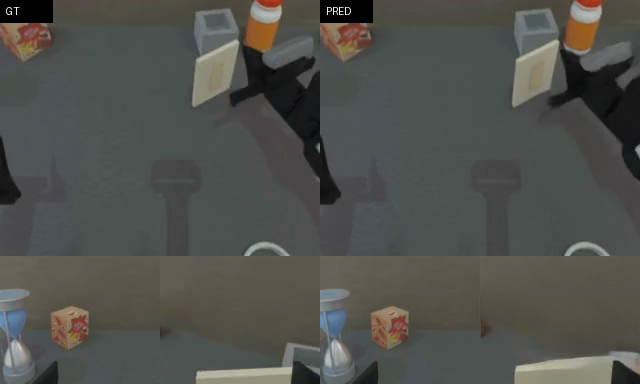
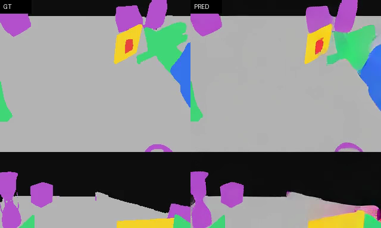

Method at a glance
How it works
- 01ObserveLanguage, RGB cameras, and robot state.
- 02Represent rolesTask-specific roles for objects, robot parts, and surfaces.
- 03ConnectJoint attention across visual, role, and action representations.
- 04Study memoryExplore retained context for longer manipulation sequences.
Project workflow schematic.
Research question
A robot does not need to model every pixel with equal importance. The object being manipulated, the surface supporting it, the robot's gripper, and an irrelevant distractor play different roles in the task. RoleWAM investigates whether making these distinctions explicit during world-action learning can create a more useful control representation.
I built the project as a research extension to FastWAM, keeping the pretrained world/action foundation while adding task-aware role supervision. The goal is to study structured representations without giving the deployed policy privileged segmentation labels or future ground-truth observations.
My contribution
My work spans model adaptation, structured visual supervision, and the training and evaluation system. The current emphasis is the joint attention module and its connection to memory.
- Developing a joint attention module linking RGB visual inputs, task-role maps (RoleMap), and action representations; comparing ways to make task-relevant information available to the policy.
- Built checkpoint migration that preserves existing RGB/action weights and initializes new role components without discarding the pretrained model.
- Developed synchronized HDF5 data contracts, role-label validation, camera/time alignment, and compressed RoleState encoder/decoder experiments.
- Engineered distributed training and checkpoint recovery, LoRA-based workstation experiments, cached causal inference, and paired task-by-task benchmark analysis.
Model: visual inputs, roles, and actions
RoleWAM builds on FastWAM / Wan2.2-TI2V-5B. The foundation combines a frozen Wan video VAE, T5 language conditioning, a visual diffusion transformer, and an action expert. I am developing a joint attention module to connect the visual, RoleMap, and action representations. The goal is to expose the functional roles of objects and robot parts during action generation.
Earlier variants encoded RGB and RoleMap videos using the same VAE and expanded the visual stream from 48 to 96 latent channels. New projections preserved pretrained RGB weights; later experiments separated the modality tokens. These are implementation variants in the research history, rather than a claim that the current architecture has already been finalized.
RGB, RoleMap, and action prediction use flow-matching objectives with independently controlled noise schedules. The model learns both visual dynamics and continuous robot actions. At deployment, a role map starts from noise rather than being supplied by a segmentation oracle. The action-only path uses current-frame visual context and cached attention keys/values; optional joint inference additionally renders predicted RGB and role trajectories for diagnosis.
The deployed causal interface uses the current image, instruction, and proprioception. Training can supervise future visual states, but that does not permit the control branch to read future ground truth at inference. This separation is enforced in the attention and input contracts.
Task-aware data representation
The RoboTwin data pipeline aligns head and two wrist cameras with fourteen-dimensional dual-arm actions. A training window contains 33 state steps and 32 actions; nine video frames are sampled at offsets 0, 4, …, 32. The camera views are arranged in a fixed spatial canvas and processed consistently for RGB and role supervision.
The seven labels distinguish background, robot arm, gripper/wrist-camera assembly, directly manipulated object, indirectly involved object, work surface, and distractor. Role IDs describe function in the task rather than merely object category. Dataset validation checks the schema and camera/time alignment, including task-specific distinctions between manipulated parts and surrounding objects.
Current direction: memory for manipulation
I am studying how to combine the joint attention module with RoboTTT’s memory mechanism. This is ongoing research: I am investigating which task-role information should be retained across observations and how it could help action decisions over longer interactions. A completed memory-integrated policy or a measured improvement is not claimed.
A separate RoleState branch compresses role-conditioned visual features and end-effector/gripper state into structured temporal tokens. I use reconstruction experiments to test what the representation retains before coupling it to action generation. Some reconstruction-only variants use privileged future RGB as an upper-bound experiment; these are not described as deployable causal models.
The latest role-encoder experiments investigate learned persistent parameters with separate key and query projections: one branch reconstructs clean role features, while the other reads the same learned matrix to produce a residual. These parameters are trained offline and frozen during inference. Despite historical experiment names, the current design does not update weights online or claim test-time adaptation. Training diagnostics and generated examples are available; a complete benchmark for this newest branch is still pending.
Benchmark results and engineering lessons
A completed earlier gated RoleWAM variant was evaluated on all 50 RoboTwin tasks under clean and randomized conditions with ten matched external seeds: 1,000 binary rollout phases per model. It achieved 900/1,000 successes (90.0%), versus 893/1,000 (89.3%) for the FastWAM release.
The paired McNemar test gives p = 0.566, so the result supports maintaining baseline-level control capability while adding structured role modeling, not a proven overall performance improvement. Task-level gains and regressions remain important. This evaluation discipline lets me investigate which representation and attention choices help particular behaviors, while avoiding conclusions based on one favorable seed or a small aggregate difference.
| Frozen evaluated model | Successful phases | Protocol |
|---|---|---|
| Gated RoleWAM | 900 / 1,000 (90.0%) | 50 tasks × 2 conditions × 10 matched seeds |
| FastWAM release | 893 / 1,000 (89.3%) | Same task/condition/seed pairs |
Project visuals




Related resources
- RoleWAM model artifactsPublished checkpoint collection; ongoing branches are described separately
- Fast-WAM: Do World Action Models Need Test-time Future Imagination?Foundation model and research baseline
- FastWAM project and implementation
- RoboTwin 2.0Simulation data generation and evaluation benchmark
- Wan 2.2Pretrained video-model foundation
- RoboTTT · Context Scaling for Robot PoliciesRelated work informing the ongoing memory-integration direction.
Based on my retained implementation, training diagnostics, paired evaluation records, and current research direction. The earlier gated-model benchmark and newest memory experiments are identified separately. Updated November 2026.